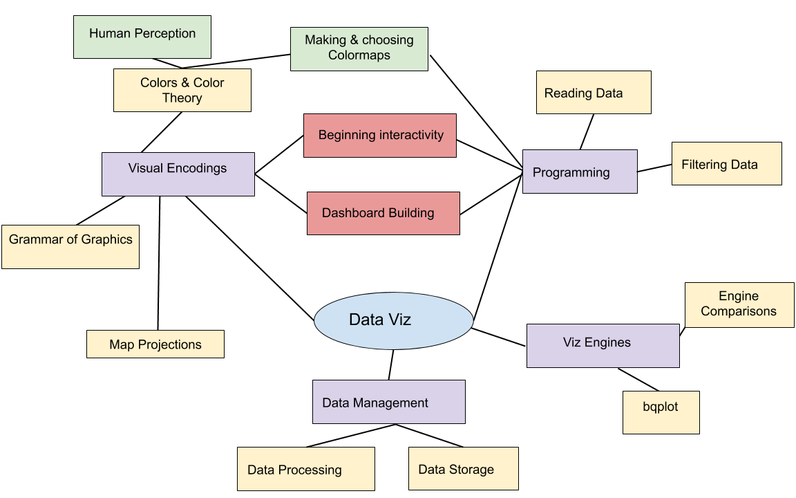

<!doctype html>
<html>
  <head>
<meta charset="utf-8">
<meta name="viewport" content="width=device-width, initial-scale=1.0, maximum-scale=1.0, user-scalable=no">

<title>Lecture 6</title>

<link rel="stylesheet" href="https://cdnjs.cloudflare.com/ajax/libs/reveal.js/3.8.0/css/reveal.css">
<link rel="stylesheet" href="https://cdnjs.cloudflare.com/ajax/libs/reveal.js/3.8.0/css/theme/white.min.css">
<link rel="stylesheet" href="https://maxcdn.bootstrapcdn.com/font-awesome/4.5.0/css/font-awesome.min.css">

<!-- Theme used for syntax highlighting of code -->
<link rel="stylesheet" href="https://cdnjs.cloudflare.com/ajax/libs/highlight.js/9.12.0/styles/github.min.css">
<link href="https://fonts.googleapis.com/css?family=Questrial" rel="stylesheet">

<script src="https://cdnjs.cloudflare.com/ajax/libs/reveal.js/3.8.0/lib/js/head.min.js"></script>
<script src="https://cdnjs.cloudflare.com/ajax/libs/reveal.js/3.8.0/js/reveal.min.js"></script>


</style>

  <link rel="stylesheet/less" type="text/css" href="/spring2020/assets/styles.less" />
  </head>

  <body>
    <div class="reveal">
      <div class="slides">
        <section data-markdown
           data-separator="^\n---\n"
           data-separator-vertical="^\n----\n">
          <script type="text/template">
<!-- .slide: class="titleslide" -->

# Data Visualization
<div style="height: 6.0em;"></div>

## Jill P. Naiman
## Spring 2020
## Lecture 6

---

## Warm-Up Activity

 1. What is the visualization trying to show?
 1. What are its methods?
 1. What are the strengths / weaknesses?

[The True Size Of...](https://thetruesize.com)

---

## Weekly Viz Report

And the winner is...

notes:
run the random number generator!

---

## Where we are: Last week


notes: last week  we started playing with dashboarding using some randomly generated data in bqplot

we also started working with the Grammer of Graphics and used bqplot declaritively to start "painting" scales and axis on our canvas

---

## Where we are: Today



notes: in the HW you thought a little more about how different engines can be used to display the same sort of data in different ways, and we'll start class by discussing the sort of questions  that you might want to ask when you're about to use a viz engine

We'll also discuss map projections and more dashboard building as well

---

## Today's Main Topics


#### Part 1:
 * Evaluating Visualization Systems - Summary of HW Ideas
 * More on dashboards
 * Beginning map-dashboards with histogramming & bqplot


#### Part 2:
 * Maps - in more detail
   * Projections
   * Coordinate Systems
   * Infoviz/Choropleth maps 
   * Plotting with CartoPy (next week)
   * Plotting with ipyleaflet (next week)
   * Plotting with geopandas (next week)

---

</br>
</br>
</br>

# Topic 1: Evaluating Visualization Engines

notes: this was something you explored in the HW but just to summarize formally some ideas you want to think about when looking at a new viz engine

---

## Evaluating Visualization Engines

 * Costs
 * Functionality
 * Aesthetics

notes: is this engine free or do you have to pay for it?  Does it do what I want?
Does its plots look like plots I want to make?

---

## Choices

 * Can I get ahold of this software?
 * Do I install it, or do I use it on a server?
 * What's the user interface like?
 * Is it declarative or is it imperative (procedural)?

notes: in the HW you looked at several different forms of interfaces for making the same plot and thought a bit about how a user of the viz might go about making different plots and how some pathways to viz might be more or less intative for you and your given task 

---

## License: Software

 * What can you do with the software?
 * Can you study the software?
 * Who can you share it with?
 * Who can you give your visualization derivative works to?

notes: while the viz engines we use in this class are generally open source, you may run into engines that are not or "somewhere in between"

In this case, you might have to think carefully about how you share your viz with others, you can use what you create? Can you actually study how the software works?

---

## License: Software

 * Copyleft: share and share-alike
 * Non-copyleft: share, but don't necessarily need to share-alike
 * https://choosealicense.com/

notes: this website has a bunch of "auto" generated licences, depending on what kind of license
you want *your* software to use

If you are ever in a position to create software, you can check this out to see what sorts of options you have.

Also, many of the open source packages we'll be using (including python) use a specific kind of license.  A lot of folks use the MIT licenses, fyi.

---

## License: Data

 * What can you do with the data?
 * How do you credit that data?
 * Can the data be redistributed, remixed, modified?
 * http://opendefinition.org/guide/data/
 * https://theodi.org/guides/publishers-guide-open-data-licensing

notes: additionally, the data that you chose to use might have a specific license.  So maybe you can use the data for your viz, but not share the data itself with others.

How can the data be modified?  Can you share the modified data?

---

## Accessibility

 * Is the software installed locally on your machine?
 * Is it hosted at a local or remote instance?
 * Who owns the visualizations, and how is access to them controlled?

---

## Interface

How do you interact with the software?

 * Declarative: how do you want the plot to look?
 * Imperative/Procedural: what are the steps to make the plot look that way?

---

## Evaluation: Costs

The "cost" of software is not exclusively the number of dollars you place on
the counter when you get a big cardboard box with marketing blurbs on the side.


---

## Evaluation: Costs

The "cost" of software is not exclusively the number of dollars you place on
the counter when you get a big cardboard box with marketing blurbs on the side.

Think about cost in several ways:

 * Monetary cost for *you* to use the software
 * Monetary cost for *someone else* to view your creations
 * Time cost of setting up the software/system
 * Cognitive cost for learning and using the system (documentation matters!)
 * Transmission cost for sharing your creations

---

## Evaluation: Aesthetics

Visualization is trendy.

When you construct something, think about the different ways it will be
interpreted:

---

## Evaluation: Aesthetics

Visualization is trendy.

When you construct something, think about the different ways it will be
interpreted:

 * How will the viewer understand the story of the data?
 * What will the _message_ of the visualization be?
 * Does the visualization say something about you and your handling of the data
   or utilization of tools?

---

## Evaluation: Aesthetics

Visualization is trendy.

When you construct something, think about the different ways it will be
interpreted:

 * How will the viewer understand the story of the data?
 * What will the _message_ of the visualization be?
 * Does the visualization say something about you and your handling of the data
   or utilization of tools?

We will discuss who the *viewer* is more in the coming weeks: is it you?  Your peers? The public?

---

<br>
<br>
<br>

# TOPIC 2: Dashboarding

---

## Recall: HW 6 this week

Build a dashboard for the buildings data.
 * Left component:
    * Grid heat map
    * Rows are congressional district
    * Columns are the governmental department (Agency Name)
    * Values are sum of total square footage for that set of criteria
 * Right component:
    * line plot
    * x is the year
    * y is total square footage acquired that year
 * These two should be linked so that you can select cells and that will update the square footage plot.
 * Things to think about:
    * Can you keep the x and y ranges static on the line plot?
    * Can you change the style?

---

## Today's Python Programming (Part 1):

Starting with these ideas, we'll progressively enhance.

 * Create heat maps of the sightings
 * Select based on states (do not use map marks yet)
 * Manually create "bins" for aggregation
 * Use different scales for dates, times, locations

We'll use these to build up a _dashboard_ for our data.

---

## Dashboards: Tableau


notes: so here is an example of a dashboard, I *think* from Tableau.  Here we see a linked view which
displays data in several different ways to give the user the ability to visualize what their data
means spatially (with the map & region bargraph) and temporally (with the calendar/bar view at the bottom)

---

## Dashboards: Glueviz


note: aside, there are opensource dashboarding type software, this is an example of glueviz that is
used a lot in astronomy and built on python

This is an example of binning light (dark or bright pixels) in an image of a star forming region (I think),
and linking this with a histogram which responds to a selection tool (in red) in the image.

---

## Dashboards: Building our own in Python

# TOPIC 3: To Python for an intro to map dashboards!

notes: today we will get more experience building up these sorts of interfaces ourselves!

          </script>
        </section>
      </div>
    </div>
<script>
    // More info about config & dependencies:
    // - https://github.com/hakimel/reveal.js#configuration
    // - https://github.com/hakimel/reveal.js#dependencies
    Reveal.initialize({
        dependencies: [
            { src: 'https://cdnjs.cloudflare.com/ajax/libs/reveal.js/3.8.0/plugin/markdown/marked.js' },
            { src: 'https://cdnjs.cloudflare.com/ajax/libs/reveal.js/3.8.0/plugin/markdown/markdown.min.js' },
            { src: 'https://cdnjs.cloudflare.com/ajax/libs/reveal.js/3.8.0/plugin/notes/notes.min.js', async: true },
            { src: 'https://cdnjs.cloudflare.com/ajax/libs/reveal.js/3.8.0/plugin/highlight/highlight.min.js', async: true, callback: function() { hljs.initHighlightingOnLoad(); } },
            { src: 'https://cdnjs.cloudflare.com/ajax/libs/reveal.js/3.8.0/plugin/math/math.min.js', async: true },
            { src: 'https://cdn.jsdelivr.net/npm/reveald3/reveald3.js'},
            { src: '/reveal.js-plugins/chalkboard/chalkboard.js' },
            { src: '/reveal-paperjs/paper-figures.js', async: true},
        ],
		keyboard: {
			67: function() { RevealChalkboard.toggleNotesCanvas() },	// toggle notes canvas when 'c' is pressed
			66: function() { RevealChalkboard.toggleChalkboard() },	// toggle chalkboard when 'b' is pressed
			46: function() { RevealChalkboard.clear() },	// clear chalkboard when 'DEL' is pressed
			 8: function() { RevealChalkboard.reset() },	// reset chalkboard data on current slide when 'BACKSPACE' is pressed
			68: function() { RevealChalkboard.download() },	// downlad recorded chalkboard drawing when 'd' is pressed
		},
        center: false,
        transition: 'none',
        backgroundTransition: 'none',
	slideNumber: true

    });
</script>
<script src="//cdnjs.cloudflare.com/ajax/libs/less.js/3.9.0/less.min.js" ></script>


  </body>
</html>

